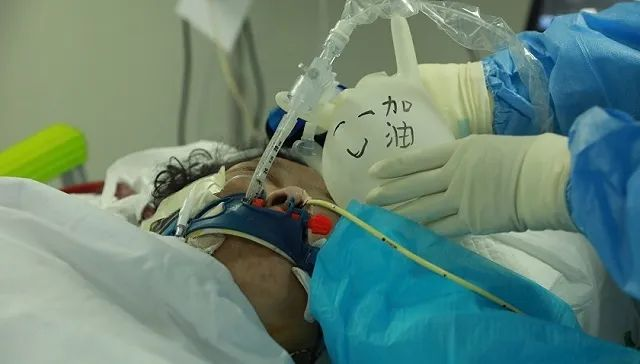
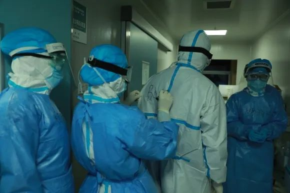
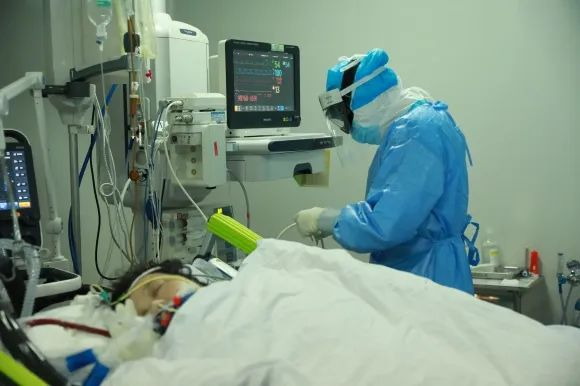

火线ICU：抢救重症患者
原文链接 备份链接 梁文接触的第一例新冠肺炎病人，是位83岁的老爷子，那是在2020年1月14日的下午2点，从普通病房转到ICU来的。 同一天出现了第二例，是位70多岁的老太太，她也被收治到了ICU。 两位老人的情况，构成梁文对疫情初期的 …
护士们为患者调整气管插管，他们用一次性手套为导管做了个支架，并写上祝福的话语。摄影： 鲁巷
记者：何雾
“
冰冷的房间，温情的夜晚。
”
在咪达唑仑（一种镇静剂）的持续作用下，这位73岁的新冠肺炎危重症患者已昏迷数日——她的血氧饱和度一度低至60%，黏液充斥着她的肺部。
每4个小时，护士们会对她进行一次镇静评分，用轻拍和呼唤名字的方式来测试她的反应。在她最危险的时候，重症医学科主任范学朋为她接上了全院唯一一台ECMO（人工肺）。这台数百万元造价的设备体外接管了患者的肺部，通过静脉向患者的脏器运送氧气，并泄出二氧化碳。
这是武汉市第一医院3楼ICU负压房内的景象。它危险重重，被层层包裹。进入这里的患者，致死率高达67%。
范学朋穿过一楼空荡荡的大厅后，通过扶梯抵达3楼ICU门外。发放物资的护士们早已备好防护设备，他必须小心翼翼，严格按照流程穿戴它们，避免任何部位暴露在高浓度病毒中。整个过程通常需要消耗30分钟。以护士们在每个人前胸、后背上写下他们的名字，范学朋的称呼是“BOSS 范”。

护士们相互写上名字，以便辨认。摄影： 鲁巷
他推开蓝色大门，便是另一个世界。在这间20平方米的ICU房间内，患者被机器和导管包围。从鼻腔进入的气管插管深入她的体内23公分，胃管则深入100公分，直抵肠道。这一切，她一无所知。
她虽仍身处险境，但病况已有好转。为了增加她的身体活性，迫使她陷入昏迷的镇静剂已减至40毫克/小时。例行寻房时，范学朋拍了拍患者的臂膀，呼唤着她的名字，又凑近她，翻开对方的眼睑。患者没有反应。

凌晨3点，范学朋正在针对患者的病情交代工作。摄影： 鲁巷
护士们开始为患者翻身。这通常是他们交班后的第一项工作。为了避免长期卧床所引起的褥疮，护士们用枕头改变患者的体位，使她的身体侧往不同的方向。患者身无一物，以便导管插入。她像一艘船那样停滞下来，寂静，沉重。为了“保留患者的尊严”，翻身的时候，护士们用蓝色毛毯遮住她的私密处——这是ICU病房里的惯例。
另一个惯例关乎时间的力量。ICU负压房被数盏灯光照亮，除了蓝、白，再无他色。监测设备和导管是冷的，取血针是冷的，只有病榻上昏迷的患者是热的。这两间负压病房没有窗户，门总是紧闭。对于危重症患者来说，外面的时间没有意义。护士们说，待到患者生命特征完全平稳、恢复神智后，他们会在夜里尽量减少对他们的打扰，只留一盏床头橘黄色的小灯，“以便让他们知道日夜。”
翻身这样的体力活需要四个护士协作。防护服里的人们早已被汗水湿透。房内只有仪器的运转声，但他们交谈时，还是要贴近彼此。
就在护士们为患者翻身时，她的右脚轻轻颤动，随后她慢慢睁开了眼。护士急匆匆叫来了正在门外电脑上查看病历的范学朋。他又凑近看着她，他们四目相对。范学朋明白，这位73岁的患者病情正逐步平稳。而她的病友——隔壁负压病房里57岁的患者，情况也正在好转，新冠肺炎导致的缺氧使她总是无意识地睁眼，护士们便用湿纱布搭住她的双目。

护士们正在操作复杂的监测设备。摄影：鲁巷
这位从医十多年的重症医学科主任说，“活着意味着一切。”他必须细致缜密，并且快速地来做这道生死判断题。
现在，人们对于新冠病毒的认知仍然有限。范学朋说，新冠病毒的可怕之处，是没有特效药。“大部分人要靠自愈。”其中氧疗、营养补给和抗菌最为关键。SARS疫情后，人们的共识是不要大剂量使用激素。“而这一次的共识是，不要所有人都用激素。”
他见证了武汉疫情从开始到爆发，再到如今“床等人”的整个过程。2019年12月末“不明原因肺炎”爆发后，作为业务领头人之一，范学朋带领着同事们从本院辗转多地，参与定点收治患者的武汉市第五医院、雷神山医院救治工作。随后，他又回到这里，参与搭建第一医院新冠肺炎患者收治病区。
这个身处疫区中心的医院，很早便建立了规范的发热门诊。疫情之初的1月5日，一医院将散落在各个科室疑似病例集中管理，并让前去诊治的医护们穿上了防护服。就在1月10日，范学朋也在临床发现多个病例并没有华南海鲜市场接触史，他提醒同事们，要注意聚集形态发病病例。这些措施在很大程度上减少了一医院医护人员们感染的风险。直到现在，在范学朋所在的重症医学科80多名医护人员队伍中，仅有3名人员感染，且都是轻症。现在，他们都已被治愈并归队。

范学朋正在观察患者的病情。摄影：鲁巷
现在，已经不是他最劳累的时候。1月24日除夕，范学朋领着8个医生和20多名护士来到武汉市第五医院时，一夜便收治了60名患者。他们连续工作了24个小时，出舱时已几近虚脱。
他通常会在上午9点进入隔离病区，中午出舱，下午参加会诊疗会议，处理管理上的工作。病人症状有变，他还要时刻待命入舱，索性在医院对面仍在营业的酒店开了一间房，在最短的时间里赶赴病房。
这本不是他的夜班。他仍然选择深夜巡房，以便目睹“夜里真实的情景”，查看患者病情，并与下属们在一起。他觉得，武汉现在一线的护士比医生更稀缺，“了解你的战友，理解他们的辛苦。”
他很早便把儿子送回了湖北黄冈老家。儿子已经14岁了，父子俩每天会通视频电话，聊聊这一天的生活。范学朋说，疫情发生后，纵然穿着防护措施，医护们还是会害怕。“自己倒下是其次，家人倒下才是致命的。”
为了避免风险，大部分的护士也选择在医院暂住。院方将他们安置在腾空的三人间病房里。护士程诗雨也将20个月大的儿子送去了老家蔡甸区，丈夫则留守在武昌的家中。他们通常也会在晚上7点拨通视频电话。夫妻俩常常沉默无言，看着屏幕里的儿子吃饭，玩耍。
她第一次跟儿子分开这么久。刚刚分离的那几天——比如大年三十的那天晚上，程诗雨刚刚看见母亲抱着她的儿子出现在视频里，眼泪便忍不住地流了下来。

护士们必须时刻监测危重症患者们的体征变化。摄影：鲁巷
一个多月过去，母子俩也都习惯了这样的见面方式。父母给外孙看她穿着防护服的照片：“看，这是妈妈。”儿子便形成了这样的认知，每次在电视里看着抗疫前线穿着防护服的人们，他便会指着屏幕喊：
“妈妈。”
程诗雨和丈夫相识5年。他们会在儿子睡觉后继续聊一会儿。女主人会在这个时候指使丈夫去做家务。以前每逢于此，他时常会试图反抗。现在，他总会爽快地答应她。他们也数月未见，程诗雨说，疫情也深刻地改变了他们。
护士们通常会在凌晨1点半到达病区。为患者翻身的工作结束后，他们还需要给患者抽血、在泵里续药，或者为其做气压治疗，以阻止患者因长期卧床而导致的静脉血栓。
他们还将持续地检测患者的生命体征。一般而言，体温和血糖等常规监测的周期从1到4小时不等。对于危重症患者来说，血氧饱和度等重要指标则需要时时检测。这意味着护士们需要长久盯住数值。他们记录患者们体征所发生的一切变化，以便通知医生判断。
现在，两名躺在负压ICU房内的患者，体征已逐步平稳，医护们也将迎来最难熬的时光。
程诗雨说，忙碌的时候，他们感受不到防护服内部的沉闷和身体的疲乏。“稍微轻松下来后，各种痛苦便随之而来。”他们的衣服早已湿透，在防护服里会闻到身子发出的馊味。长时间的压迫式佩戴口罩，带子会像刀子一样割在耳朵上。当他们停下走动和体力劳动时，会感到衣物贴身的冷。凌晨5点，他们普遍感到饥饿和口渴，伴随而来的是胃部疼痛。但这些感受，他们不能说出来。体感的痛苦，会像“传染病”一样传递给在场的其他人。
范学朋没有表露痛苦。这一夜的工作快要结束了，他又坐回了办公桌前。时间已近6点，早班的张医生推开了病区的大门。他们先后来到两位患者的病床前，范学朋给她详细交代了接下来4个小时里的注意细节。

倒数第二段 范学朋的摄影作品，被摆在病房外面。摄影：鲁巷
他随后退出了病房。他曾经在交流学习时拍摄过国外的风景，便把照片挂在科室的走廊上。这些来自波士顿、荷兰等地的风景照被他嵌入红色相框内。他穿着防护服路过这些风景时，会抬头看看这些生机勃勃的自然事物。
未经授权 禁止转载

原文链接 备份链接 梁文接触的第一例新冠肺炎病人，是位83岁的老爷子，那是在2020年1月14日的下午2点，从普通病房转到ICU来的。 同一天出现了第二例，是位70多岁的老太太，她也被收治到了ICU。 两位老人的情况，构成梁文对疫情初期的 …
原文链接 备份链接 澎湃新闻记者 钟笑玫 实习生 沈青青 半夜两三点醒来是常事。 摸到手机，李昕给好友发微信：“紧张怎么办？你安慰安慰我。” 对方正在熟睡，她当然知道。只不过白天紧绷的神经一松，同济大学附属东方医院援鄂医疗队女医生的担子卸 …
原文链接 备份链接 澎湃新闻记者 张唯 了解危重症患者的临床特征对于降低新型冠状病毒肺炎的死亡率至关重要。当地时间2月24日，华中科技大学同济医学院、武汉市金银潭医院、武汉大学人民医院等机构在《柳叶刀呼吸医学》(The Lancet …
原文链接 备份链接 澎湃新闻记者 杨喆 实习生 陈思旭 2月15日下午2点30分，申波终于走出了湖北省黄石市传染病医院。去武汉参加公司年底聚餐时他不幸感染了新冠肺炎，1月23日被确诊，此后他在医院里共住了23天。 这23天，申波觉得自己像 …
原文链接 备份链接 【财新网】（记者 宿慧娴 黄蕙昭）武汉大学中南医院最新论文显示，新冠抗疫过程中，院内感染应高度警惕。该院从1月1日至1月28日收治的138名新冠肺炎确诊患者中，约41.3%的患者属于院内感染，其中40人（29%）为医 …